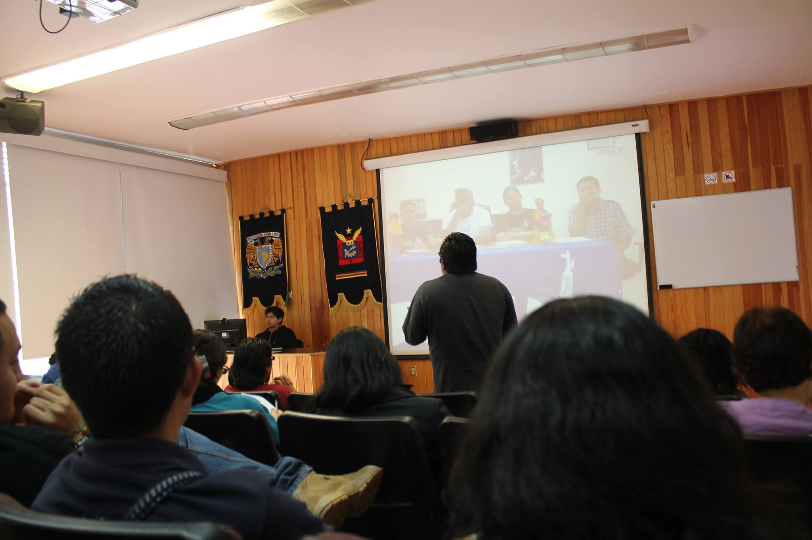

¿Quiénes somos?
El proyecto político de la agrupación Tiempos Modernos tuvo sus orígenes en la política estudiantil dentro de la universidad. En ese entonces, la idea central que aglutinaba nuestra acción política era la necesidad de que el movimiento estudiantil pasara a la ofensiva.
Para ello, trabajamos a partir de la recuperación de las demandas y necesidades de la comunidad educativa, al mismo tiempo que articulábamos y explicábamos estas demandas en el marco de la política nacional e internacional. En particular, nos alineamos con los movimientos estudiantiles de América Latina y el Caribe, y con los vientos revolucionarios, adoptando como nuestra consigna: ¡Unidad latinoamericana frente al imperialismo!
Lucha estudiantil
En consecuencia, la estrategia que desplegábamos consistía en fortalecer y fomentar la organización estudiantil. Se organizaban acciones que respondían a coyunturas, particularmente educativas, y otras de forma permanente, como la Cátedra Pasado y Presente y los Debates por la Universidad.
Así como el ocupar los cuerpos colegiados para usarlos como cajas de resonancia y devolverles su sentido político (más allá de que fueran ocupados como trampolines políticos o para fines meramente personales). De ahí que se impulsaran procesos de candidaturas a consejos técnicos y universitarios.
Lucha nacional
Como parte de todo proceso revolucionario, consideramos necesario disputar y recuperar espacios estratégicos que inciden en la política nacional, como es el caso de la Universidad Nacional y, en general, la educación pública, entendida como derecho y principio de justicia social. De ahí que parte de nuestra política se despliegue en la defensa de la educación pública.
Como todo proyecto político, hemos experimentado cambios y transformaciones, como es la ampliación de nuestra política en el ámbito nacional. Asumimos que el trabajo político, las alianzas y los espacios en el movimiento social deben encaminarse y desarrollar una estrategia de largo aliento para construir la voluntad política nacional, que se proponga la disputa de la nación y el Estado, y que supere la fase peticionista-corporativa en la que tiende a estancarse la actividad política en el país.
A diez años de nuestra fundación, Los Tiempos Modernos reivindicamos que es posible y deseable construir una modernidad socialista, que supere la explotación del ser humano por el ser humano y el dominio patriarcal que impone cargas tanto a hombres como a mujeres. Una modernidad construida sobre la base de nuestras raíces indígenas, mestizas y populares, que exprese a los pueblos y no a los explotadores, sean criollos o extranjeros.
Como parte de los trabajos de la organización, impulsamos un esfuerzo de corte editorial con el cual buscamos contribuir al debate y la reflexión, en aras de fortalecer la organización y el horizonte de transformación de los pueblos indoamericanos.